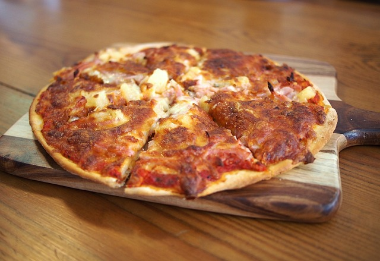
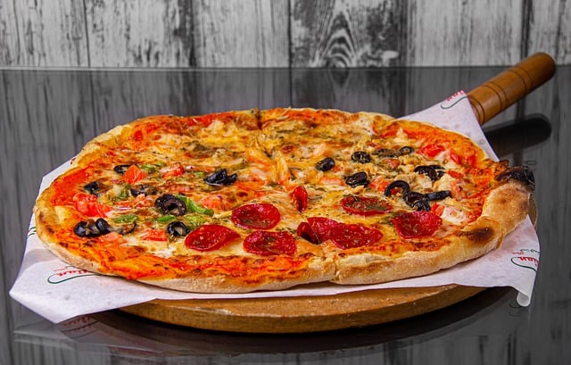

MENU

Margherita

Pepperoni

Hawajska

Diavola

Vegetariana

Rezerwuj stolik już teraz i ciesz się wyjątkowym doświadczeniem kulinarnej podróży w naszej restauracji! Zapewniamy przytulną atmosferę, doskonałe dania i profesjonalną obsługę. Skorzystaj z naszego prostego formularza rezerwacyjnego i gwarantuj sobie wyjątkowe miejsce w naszym lokalu. Twój smakowy przyjemność czeka na Ciebie!
Witamy w La Trattoria del Sole!
Jesteśmy restauracją, w której stawiamy na wyjątkowe doświadczenie
kulinarne. Nasza pasja do smaku, autentyczne włoskie receptury i
zamiłowanie do doskonałych składników sprawiają, że każde danie,
które serwujemy, jest prawdziwą ucztą dla podniebienia. Od samego
początku naszej restauracji dążymy do tworzenia niezapomnianych
chwil oraz oferowania naszym gościom prawdziwej włoskiej
gościnności. Kiedy przekraczasz nasze progi, czekają na Ciebie
ciepła atmosfera, przytulne wnętrze i serdeczna obsługa, która
zatroszczy się o każdy szczegół Twojego doświadczenia. Nasz szef
kuchni, z wieloletnim doświadczeniem we włoskiej kuchni,
pieczołowicie komponuje menu, dbając o zachowanie autentycznego
smaku i świeżości składników. Od klasycznych włoskich dań, takich
jak perfekcyjnie wyrośnięte pizze i al dente makarony, po wyszukane
przystawki i wykwintne dania główne, nasza karta menu zapewni Ci
niezapomniane doznania kulinarne. Chcemy, aby nasza restauracja była
miejscem, w którym tworzą się wyjątkowe wspomnienia. Organizujemy
także różnego rodzaju wydarzenia tematyczne a nawet specjalne
wieczory, które dodatkowo wzbogacą Twoje doświadczenie i umożliwią
Ci odkrycie nowych smaków i aromatów. Serdecznie zapraszamy do
odwiedzenia naszej restauracji i pozwól nam zabrać Cię w podróż po
smakach i zapachach Włoch. Dołącz do nas, siądź do naszego stołu i
ciesz się prawdziwie włoską gościnnością.
Zespół La Trattoria del Sole
To była najwspanialsza włoska uczta, jakiej kiedykolwiek doświadczyłam! Każde danie było pełne smaku i autentycznego włoskiego charakteru. Obsługa była niesamowicie przyjazna, a atmosfera restauracji była magiczna. Gorąco polecam La Trattoria del Sole każdemu, kto pragnie odbyć smakowitą podróż do Włoch.
Nasz wieczór spędzony w La Trattoria del Sole był niezapomniany. Zarówno jedzenie, jak i obsługa były doskonałe. Pizza była wyjątkowo smaczna, a makarony były przygotowane al dente - tak jak powinny być. To miejsce ma wyjątkowy urok i świetną atmosferę. Na pewno tu wrócimy!
Jestem zachwycony La Trattoria del Sole! Ich menu jest bogate w autentyczne włoskie smaki, a dania są starannie przygotowane z najwyższą jakością składników. Obsługa była przyjazna i pomocna, a atmosfera restauracji była przytulna. To miejsce, gdzie można naprawdę poczuć się jak we Włoszech.
La Trattoria del Sole to moje ulubione miejsce na romantyczną kolację. Ich pyszne dania, świetna selekcja win i romantyczne otoczenie tworzą idealną atmosferę. Obsługa jest zawsze uprzejma i profesjonalna. Polecam to miejsce wszystkim, którzy pragną spędzić wyjątkowy wieczór w przyjemnej i gustownej restauracji.